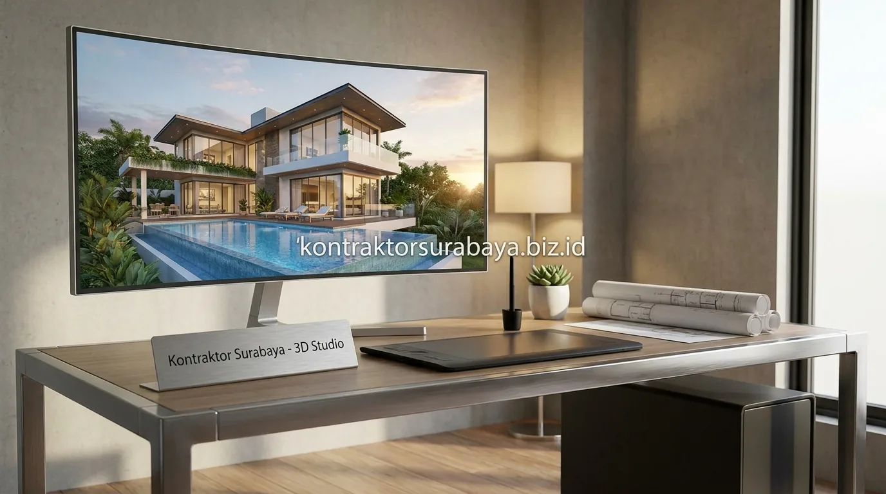

Membangun rumah tinggal, ruko, maupun gedung komersial di kawasan metropolitan seperti Surabaya, Sidoarjo, dan Gresik membutuhkan perencanaan teknis yang matang sejak awal. Banyak calon pemilik hunian sering kali bertanya-tanya mengenai output konkret apa saja yang akan mereka terima ketika menyewa jasa arsitek profesional.
Hasil utama dari proses perancangan arsitektur bukan sekadar sketsa denah atau gambar 3D estetik, melainkan satu set lengkap Dokumen Gambar Kerja (DED / Detail Engineering Design). Dokumen ini berisi instruksi teknis terperinci yang menjadi acuan mutlak bagi tim tukang dan kontraktor pelaksana di lapangan.
1. Kenapa Dokumen Gambar Kerja Penting Sebelum Konstruksi Dimulai?
Dokumen gambar kerja menjadi acuan teknis bersama antara klien, arsitek, dan tim pelaksana konstruksi, sehingga setiap pihak memiliki pemahaman yang sama mengenai bentuk, ukuran, dan spesifikasi bangunan sebelum pekerjaan fisik dimulai.
Tanpa dokumen yang lengkap, proses konstruksi berisiko mengalami banyak revisi di lapangan akibat ketidaksesuaian pemahaman antara pihak yang terlibat, yang pada akhirnya dapat menambah waktu pengerjaan sekaligus membengkakkan biaya di luar rencana awal. Dokumen ini juga menjadi syarat administratif yang umumnya diperlukan dalam proses pengurusan perizinan bangunan seperti Persetujuan Bangunan Gedung (PBG).
2. Gambar Arsitektur yang Termasuk dalam Paket Jasa Arsitek
Denah ruangan, tampak bangunan dari berbagai sisi, potongan bangunan, dan gambar 3D atau render adalah empat jenis gambar arsitektur yang umumnya termasuk dalam paket jasa arsitek:
- Denah Ruangan (Floor Plan): Menunjukkan tata letak setiap ruang beserta ukurannya secara detail dari pandangan atas, lengkap dengan posisi bukaan pintu, jendela, dan sirkulasi pergerakan penghuni.
- Tampak Bangunan (Elevation): Dari sisi depan, samping kanan, samping kiri, dan belakang memperlihatkan proporsi bentuk fasad secara dua dimensi beserta elevasi ketinggian dinding.
- Potongan Bangunan (Section): Menampilkan detail irisan vertikal bangunan (melintang dan membujur), ketinggian lantai ke plafon, struktur rangka atap, dan hubungan antar lantai.
- Detail Arsitektur (Architectural Details): Gambar detail pola lantai, detail kusen pintu/jendela, tangga, railing balkon, hingga detail toilet dan fasad secondary skin.

3. Gambar Struktur untuk Memastikan Kekuatan Bangunan
Denah pondasi, denah kolom dan balok, detail penulangan besi, dan hasil perhitungan struktur adalah empat komponen gambar struktur yang memastikan kekuatan bangunan sesuai standar teknis:
- Denah Pondasi: Menunjukkan posisi, dimensi, dan jenis pondasi yang digunakan (seperti pondasi footplate/cakar ayam, tiang pancang, atau batu kali) sesuai daya dukung tanah di lokasi proyek.
- Denah Kolom, Balok, dan Plat Lantai (Sloof & Ringbalk): Merinci posisi elemen struktural utama yang menopang beban bangunan secara keseluruhan dan menyalurkannya ke pondasi.
- Detail Penulangan Besi (Bending Schedule): Menjelaskan diameter besi ulir/polos, jumlah tulangan utama, jarak begel (sengkang), dan ketebalan selimut beton pada setiap elemen struktur.
- Hasil Perhitungan Struktur: Menjadi dasar teknis yang memastikan seluruh elemen konstruksi mampu menahan beban mati, beban hidup, serta beban gempa sesuai fungsi bangunan.
4. Gambar MEP (Mekanikal, Elektrikal, Plumbing) dalam Paket Desain
Titik instalasi listrik, jalur pipa air bersih, jalur pipa air kotor, dan titik AC atau ventilasi mekanis adalah empat komponen gambar MEP yang biasanya disertakan dalam paket desain arsitek:
- Titik Instalasi Listrik & Pencahayaan: Menunjukkan posisi saklar, stop kontak, titik armature lampu di setiap ruangan, jalur kabel grouping MCB, dan panel box listrik utama.
- Jalur Pipa Air Bersih: Merinci jalur distribusi air dari tandon bawah (ground tank) / PDAM, pompa pendorong (booster pump), tandon atas (roof tank), hingga titik kran dan shower.
- Jalur Pipa Air Kotor & Bekas: Menggambarkan sistem pembuangan air limbah dari kamar mandi, dapur, dan floor drain menuju septic tank biofilter atau saluran drainase lingkungan.
- Titik AC & Ventilasi Mekanis: Direncanakan sejak awal agar jalur pipa refrigerant, pembuangan drain AC, dan lubang exhaust fan tidak membobol balok struktur maupun merusak estetika ruangan.
5. Bagaimana Gambar 3D Membantu Klien Membayangkan Hasil Akhir?
Visualisasi tiga dimensi memberi gambaran nyata mengenai proporsi ruang, kombinasi material, dan pencahayaan yang sulit dibayangkan hanya dari gambar denah dua dimensi.
Banyak klien merasa kesulitan membayangkan hasil akhir bangunan hanya dari gambar denah dan tampak berupa garis-garis teknis arsitektur. Kehadiran gambar 3D render photorealistic membantu menjembatani kesenjangan tersebut dengan menampilkan tekstur material (seperti batu alam, kayu, marmer, atau kaca), permainan warna cat, serta efek tata cahaya lampu secara lebih realistis sebelum keputusan desain final dieksekusi di lapangan.
6. Dokumen Pendukung Lain yang Biasanya Disertakan
RAB awal, spesifikasi material, jadwal pelaksanaan estimasi, dan dokumen pendukung untuk pengurusan izin adalah empat dokumen tambahan yang umumnya disertakan bersama paket gambar kerja arsitek:
- RAB Awal (Rencana Anggaran Biaya): Memberi gambaran estimasi biaya konstruksi berdasarkan volume pekerjaan dan spesifikasi desain yang telah disepakati bersama.
- Rencana Kerja dan Syarat-Syarat (RKS) / Spesifikasi Material: Merinci mutu beton, jenis semen, merek keramik/granit, tipe sanitair, hingga spesifikasi cat yang direkomendasikan.
- Jadwal Pelaksanaan Estimasi (Time Schedule S-Curve): Memberi gambaran durasi pengerjaan tahapan konstruksi dari nol hingga serah terima kunci.
- Dokumen Pendukung Pengurusan Izin (PBG/SLF): Format gambar teknis yang disesuaikan dengan regulasi dinas perizinan terpadu (SIMBG) kota/kabupaten setempat.
7. Kesalahan yang Terjadi Jika Membangun Tanpa Dokumen Gambar Kerja Lengkap
Mencoba menghemat biaya dengan membangun rumah tanpa gambar kerja arsitek yang jelas justru sering berujung pada kerugian finansial yang jauh lebih besar:
- Perubahan Desain Mendadak di Lapangan: Tanpa gambar acuan terukur, tukang akan bekerja berdasarkan asumsi, mengakibatkan dinding harus dibongkar ulang karena salah posisi pintu atau jendela.
- Ketidaksesuaian Struktur dengan Beban Bangunan: Pembesian yang asal tebak berisiko menimbulkan struktur over-budget (boros besi) atau under-design (balok melorot dan dinding retak struktural).
- Kesulitan Mengurus Izin PBG: Pengajuan izin bangunan di Surabaya akan ditolak oleh dinas jika tidak melampirkan gambar arsitektur dan struktur yang sesuai kaidah teknis.
- Pembengkakan Biaya Akibat Pekerjaan Ulang (Rework): Pembongkaran dan tambal sulam di tengah proses pengerjaan membuang waktu serta material bangunan secara sia-sia.
"Dokumen gambar kerja yang lengkap adalah cetak biru kesuksesan proyek; setiap garis denah dan detail struktur dirancang untuk menjamin efisiensi biaya dan keamanan bangunan jangka panjang."
Kelengkapan dokumen gambar kerja dapat bervariasi tergantung paket layanan dan kompleksitas proyek yang disepakati bersama arsitek. Pelajari cakupan layanan desain lengkap pada halaman jasa arsitek Surabaya, atau kenali lebih jauh tim profesional kami pada halaman tentang kami.